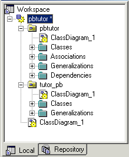

An OOM is a structure that provides a close description of a system using Unified Modeling Language (UML) diagrams.
A diagram is a graphical view of a model or package, which displays object symbols. Diagrams allow you to split the display of large models and packages in order to focus on certain objects or subject areas. They can also be used to view the symbols of the same objects, displayed with different kinds of information. With the PowerDesigner plug-in for PowerBuilder, the class diagram is the single type available. A class diagram describes the structure of model elements.
You can create several diagrams in a model or in a package. The diagram window usually appears with a specialized toolbar called the tool palette, from which you can select tools to create objects in your models and packages.
All diagrams have a name and graphical contents. They are projections of the model and they represent it from different angles. They are sorted alphabetically in the PowerDesigner Browser except for the default diagram, which is the first in the list. Each diagram has its own icon to help you quickly identify its type in the Browser. Figure 4-1 shows a class diagram in the PowerDesigner Browser.
With the PowerDesigner plug-in for PowerBuilder, you can open a PowerDesigner OOM file in PowerBuilder, but you see only the class diagrams saved in the file. You can also save a class diagram that you create with the plug-in and open that file directly in PowerDesigner.

For more information about the OOM, see the PowerDesigner Object Oriented User's Guide and the PowerDesigner Object Oriented Model Getting Started on the Sybase Web site .